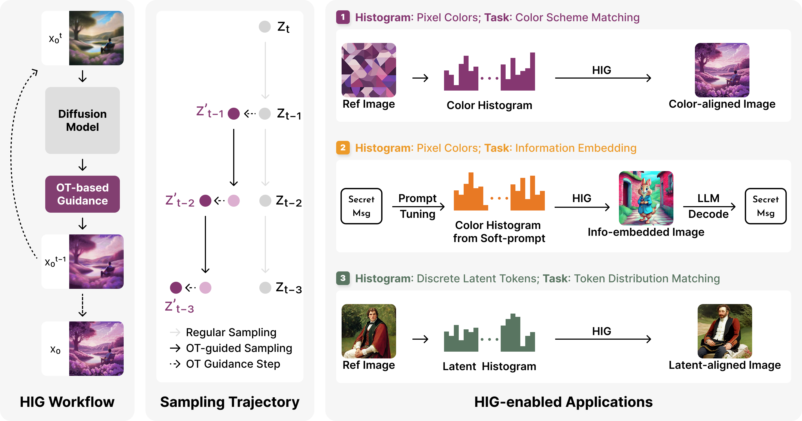
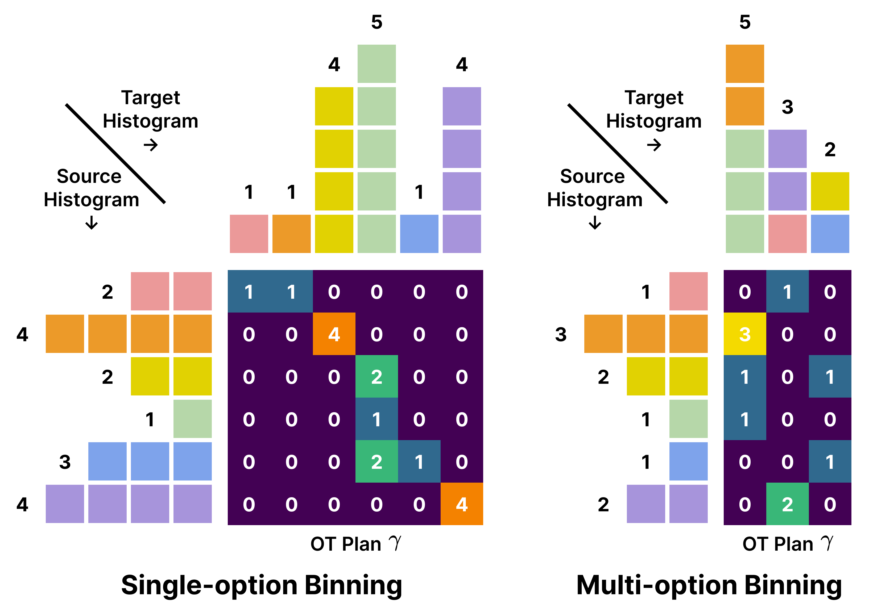
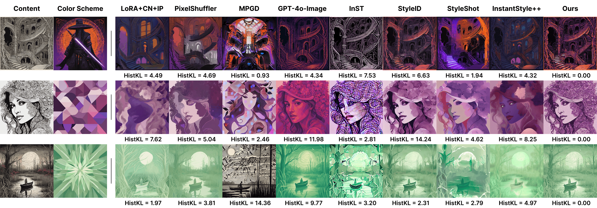
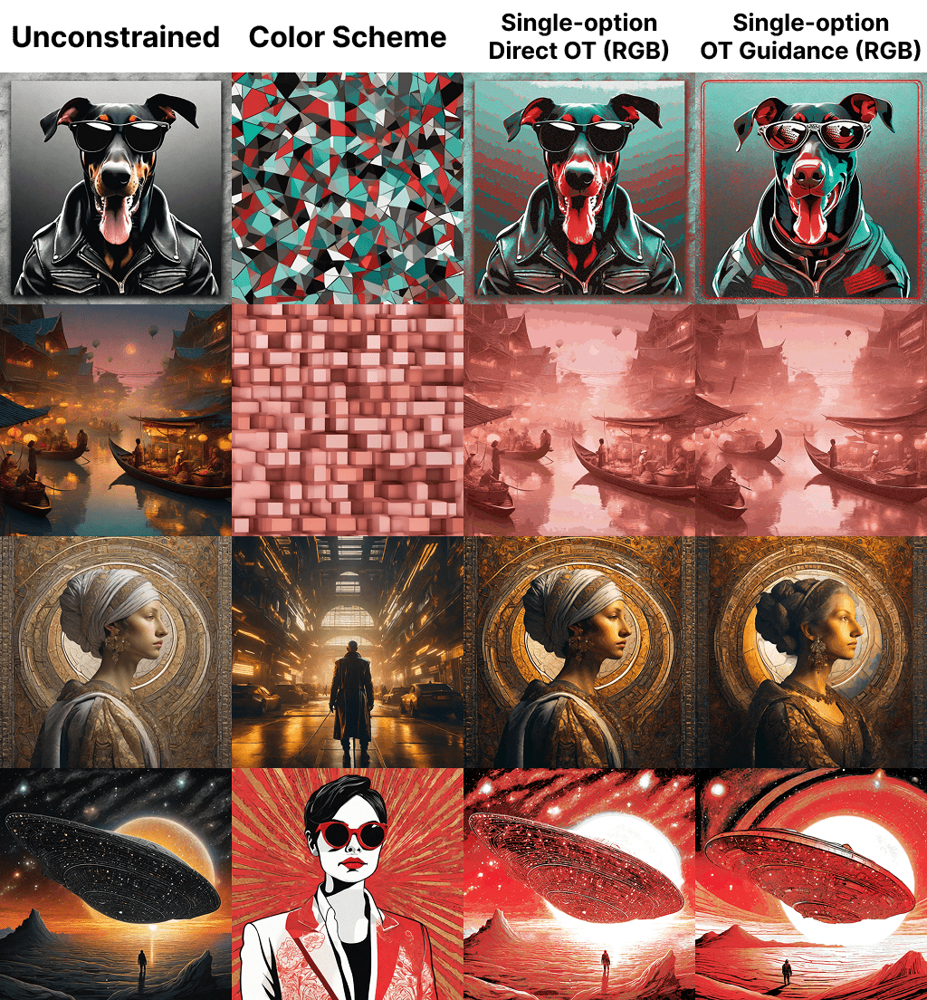
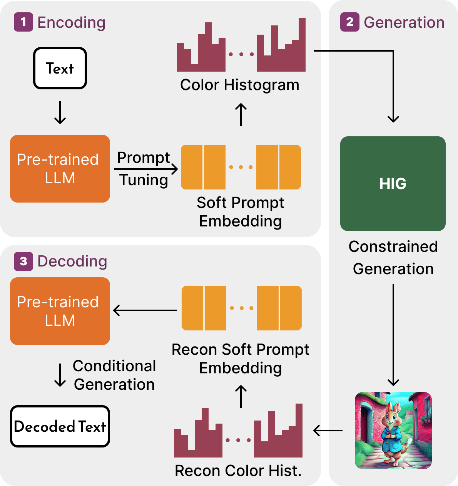
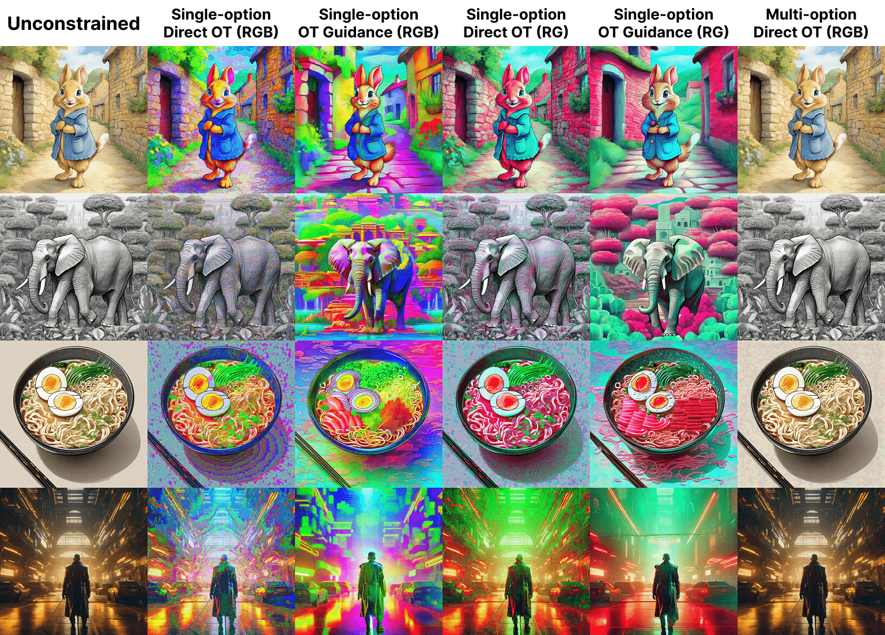
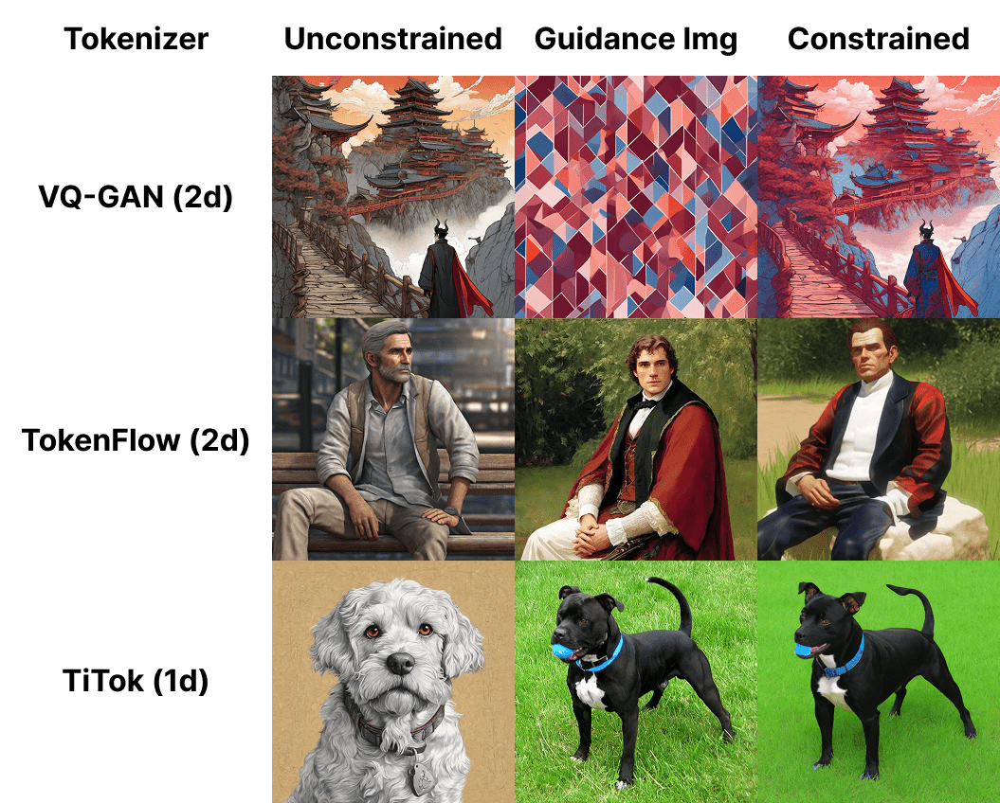

Histogram-constrained Image Generation
Exact, Training-Free Distributional Control for Diffusion Models
via Optimal Transport (ECCV 2026)
Overview

TL;DR: Controllable generation spans a spectrum of granularity: text prompts and LoRAs steer generation globally, while ControlNets anchor local structure. HIG fills the middle ground by regulating the distributional properties of an image. Given any target histogram over pixel colors or latent tokens, HIG drives the diffusion trajectory to match it exactly, using a minimal-cost optimal transport plan applied as inference-time guidance. It is training-free, interpretable, lightweight, and fully compatible with existing controls.
Method
1. Inference-time guidance via explicit transformations
Rather than manipulating the noise prediction $\epsilon_\theta(z_t, c, t)$ through auxiliary inputs (ControlNet) or extra weights (LoRA), HIG explicitly transforms the intermediate clean-image estimate $z_0^{t}$ via a decode → transform → encode cycle:
The transformed latent continues the sampling trajectory. Guidance $\varphi$ is applied only on a subset of steps $\mathcal{T}$. Because the OT formulation minimizes transport cost, the intervention stays minimally invasive and later steps refine the output, preserving fidelity.
2. Histogram matching with optimal transport
A histogram is a discrete distribution over $d$ bins (uniform partitions for RGB colors, token indices for discrete tokens). Given source $h_{\text{src}}$ and target $h_{\text{tgt}}$, HIG solves the OT plan $\gamma$ minimizing transport cost $\langle \gamma, M \rangle$ under the marginal constraints, specifying exactly how many pixels or tokens move between bins. We then sample source units and reassign them to target-bin values. Specifically, we consider two binning strategies:
- Single-option binning: each bin is one color range or token.
- Multi-option binning: each bin holds $k$ candidates and only the aggregate per-bin mass is constrained, so intra-bin assignments pick the closest match, reducing distortion.
A vanilla network-simplex solver matches a $d = 4096$ histogram on $1024^2$ images in ~0.2s.

3. Constructing target histograms
- From reference images: compute the histogram of a reference and use it as the target. An optional post-hoc OT step guarantees exact compliance when needed.
- From continuous vectors: map a vector deterministically to a target color distribution, enabling information embedding (below).
Applications & Results
A. Color-constrained generation
HIG matches a target color histogram exactly while preserving prompt compliance and aesthetics. On a benchmark of 300 prompts × 300 reference images, it achieves the best histogram alignment (HistKL → 0.00 with post-hoc OT), best prompt compliance (CLIP 27.19), and best aesthetics (6.78) against other control baselines. Applying OT during denoising, rather than directly on the final image, removes artifacts from rigid pixel reassignment, at overhead (~2.2s) comparable to LoRAs and ControlNets.


B. High-capacity information embedding
HIG can hide text inside an ordinary-looking image via its color distribution. A soft prompt, tuned so that an LLM (Llama-3.1-8B) reproduces a target sentence, is deterministically mapped to a target histogram; exact histogram alignment lets the text be decoded back.
- Embeds up to 512 text tokens per image, faithfully decodable.
- Exact decoding rate:>97% at 256 tokens, >90% at 512 tokens.


C. Latent histogram matching (preliminary)
As a proof of concept, HIG extends from pixel space to the discrete codebooks of image tokenizers (VQ-GAN, TokenFlow, TiTok), where the control effect ranges from color-scheme-like to semantic or spatial depending on what the latent encodes. Results here are empirically unstable and highly bounded by the tokenizer decoder, so we treat this as a preliminary direction rather than a reliable application.

Takeaways
- HIG adds a new, orthogonal control axis (distributional control) that complements text, structure, and style, and composes with existing controls.
- The OT formulation gives exact, minimal-cost compliance, enabling precision-critical uses such as information embedding.
- It is training-free and lightweight, with negligible inference overhead.
BibTeX
@article{liu2026histogram,
title={Histogram-constrained Image Generation},
author={Liu, Haoming and Guo, Yuanhe and Cao, Yijia and Wan, Shenji and Wen, Hongyi},
journal={arXiv preprint arXiv:2606.31683},
year={2026}
}